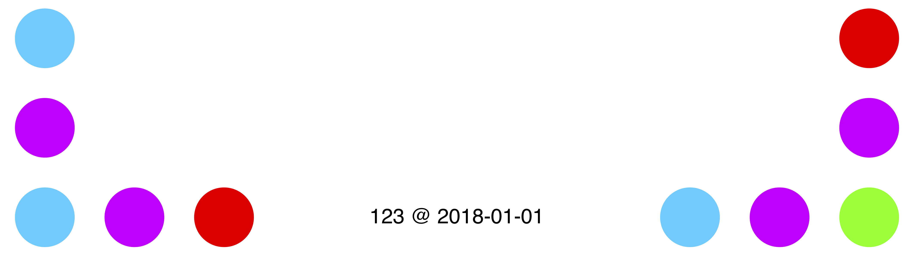
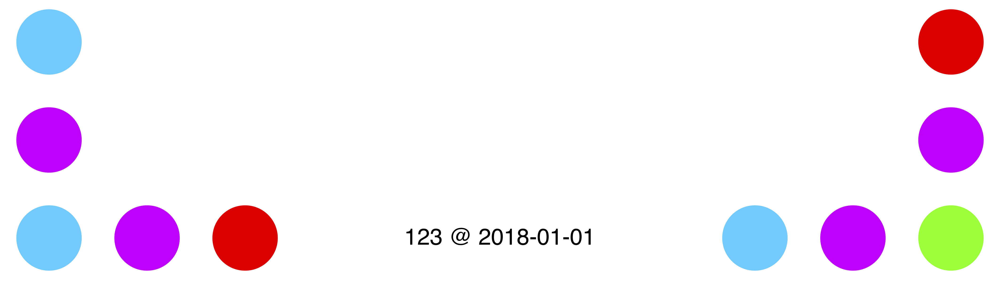

Who created Paper Programs? And why?
Hi, I’m JP. There are lots of reasons I could list for building Paper Programs, such as having worked on interactive tools for many years, a background in programming education, and having experimented with different representations of program execution. But the truth is, I was just unreasonably excited after trying Dynamicland for the first time, and wanted to explore their interaction model more.
Much thanks to everyone who helped testing Paper Programs. Special thanks to Omar Rizwan for sort-of instigating this project, and offering tons of ideas and feedback.
How is Paper Programs related to Dynamicland?
Paper Programs recreates just a tiny part of what makes Dynamicland so interesting. To learn more about their system and vision, be sure to visit Dynamicland in Oakland -- and please consider donating, too!
Paper Programs is inspired by the projector and camera setup of the 2017 iteration of Dynamicland. I liked how you could physically hold a program in your hands, and then put on any surface in the building, where it would start executing, as if by magic. And I liked how people naturally started collaborating, writing programs that interact with each other.
In contrast, Dynamicland is a community space designed around Realtalk. Realtalk is a research operating system (in development for several years) designed to bring computation into the physical world. It is more general than papers, projectors, and cameras. Dynamicland is intended as a new medium of human communication, and is designed to be learned and used by a community of people interacting face-to-face, not over the internet.
In short, Paper Programs gets you a limited version of the interaction model of Dynamicland, but not the other parts:
| Paper Programs | Dynamicland | |
|---|---|---|
| Platform | Chrome with experimental flags enabled | Realtalk OS |
| Contributors | People with spare time | Dedicated research team |
How does Paper Programs work?
Programs are stored on a server (using Node.js and PostgreSQL), hosted on paperprograms.org. Each program has a number, and the dots on the paper encode that number. Currently each corner is uniquely identified with 5 dots of 5 possible colours, which means you can have about 600 unique papers currently (this is a significant limitation).
A camera detects the dots and retrieves the program associated with each paper. This is done in a browser, using OpenCV compiled to WebAssembly, and some custom Javascript code. Calibration happens manually, using a UI built in React. Program code and configuration are stored in the browser’s local storage.
Projection and execution of programs happens in a separate browser window. Each program runs asynchronously in a Web Worker, and can request access to a canvas, coordinates of other programs, and so on.
Then there is an editor page, which anyone in the space with a laptop or tablet can use to edit programs, using Monaco. When having created a new program, you can click a print button to print out a new paper that runs that program. It has the program text printed on the paper itself. Any edited program can be reverted to its original state.
How can I help?
If you’re interested in contributing to Paper Programs, feel free to submit PRs, bugs, and suggestions at the Github repo. And please tag any posts in social media with #paperprograms.